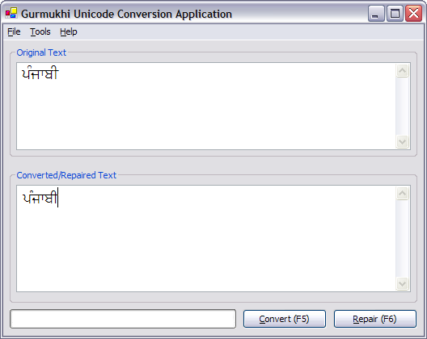
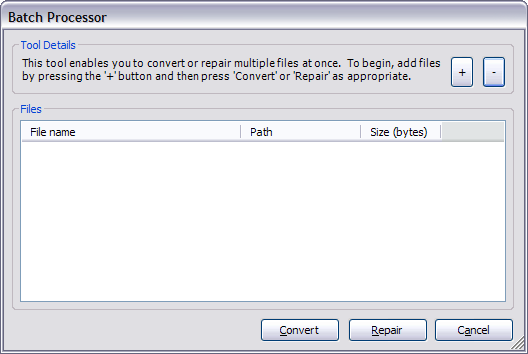
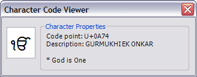
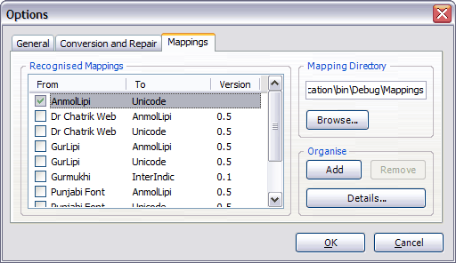

This documentation deals with the general aspects of the Gurmukhi Unicode Conversion Application. It is specifically aimed at end-users wishing to use the main GUCA application.
Applies to: GUCA Version 1.3
GUCA is designed specifically with the aim of converting ASCII encoded, font-based Gurmukhi text into Unicode. It is open-source and is released under the GNU General Public Licence.
GUCA is created using the Microsoft .NET framework (currently version 1.1) and is designed for use on fully Unicode based Windows operating systems (Windows 2000, XP etc.). It should also work in Windows 98 and ME but the actual conversion will not be visible to the user until it is viewed in a operating system independent, Unicode compatible program (for example, Internet Explorer 6).
GUCA is a small program and as such has very few dependencies. Before you begin installing, please ensure you have the Microsoft .NET Framework installed on your computer. This is a fairly large download but it will allow you to use many programs in addition to GUCA.
Once you have downloaded GUCA, you will need to extract the program files from the archive. To do this you require an unzipping utility. We recommend WinRAR, WinZip or 7-Zip. Extract the files to any location, for example "C:\Program Files\Gurmukhi Unicode Conversion Application" would be sufficient.
Once extracted, simply click on the GUCA executable icon to load the program. If you wish to remove the program, simply delete the directory into which you extracted the archive. GUCA does not modify the system registry or create files outside of its own program directory.
The main window of GUCA is designed to be very simple. It features a menu bar, two text boxes, a progress bar and two buttons.

To begin, enter some text into the top text box. Then press the button labelled "Convert" to begin conversion. The progress bar at the bottom of the screen will indicate the progress of the conversion. If you wish to cancel the conversion at any time, you can press the "Cancel" button when it appears on the screen. The converted text will be shown in the bottom text box.
You can open text into the top text box by going to "File" and clicking "Open". You can save the contents of the bottom text box by clicking on "File" and then "Save" or "Save As...".
The repair feature is designed to fix badly constructed Unicode Gurmukhi. This will not affect font-based Gurmukhi text. It can normalise text, reposition U+0A3F and repair characters based on the proposed (but not accepted) ISCII 91 extensions to Unicode. This feature can be used in the same way as the conversion feature but you should enter Unicode text into the top text box.
GUCA enables you to export the converted/repaired text into an XHTML document. This is particularly useful if you are using Windows 98/ME and are unable to view the outputted Unicode text in the bottom text box. Once exported, you should be able to open up the file in an internet browser (Internet Explorer 6 or Mozilla Firefox are recommended). Provided you have the correct fonts installed, you should be able to view the Gurmukhi text in any Unicode enabled web browser.
The batch processor tool enables you to either convert or repair multiple files in one operation. To load the batch processor, click on the "Tools" menu and then select "Batch Processor". This should load up the batch processor dialog box as shown:

To add files, press the "+" button. To remove files press the "-" button. Once you have selected the files you wish to process, press the "Convert" or "Repair" button as appropriate. You can cancel the operation at any time.
The character code viewer will give you details regarding Unicode characters in the Gurmukhi range. This tool is available from the "Tools" menu.

Simply enter - or paste - a character into the text box and information about that character will be displayed to the right. If no information is available for that character (say for example if it is outside of the Gurmukhi range), only the code point will be displayed.
Custom mappings are used to convert to-and-from different fonts. It allows users to create their own custom font mappings that are not supported by GUCA.
Clicking on 'Tools' > 'Options' > 'Mappings' brings up a list of recognised mappings:

From this screen you can add or remove mappings. Selecting the check box next to a mapping makes it become the default mapping. This will be the mapping used in the batch processor or when you press F5. To select an alternative mapping from the main window, click 'Tools' > 'Convert' and then select the required mapping.
GUCA now contains a simple transliteration tool that allows you to convert Unicode Gurmukhi into Latin text. This helps people that can read English and understand Punjabi, to read Punjabi text. To transliterate text, copy the appropriate Unicode Gurmukhi text into the top text box and press F9.
This feature does NOT translate Punjabi to English. This is currently only a crude implementation which will be improved in coming versions.
Copyright © 2004 Sukhjinder Sidhu